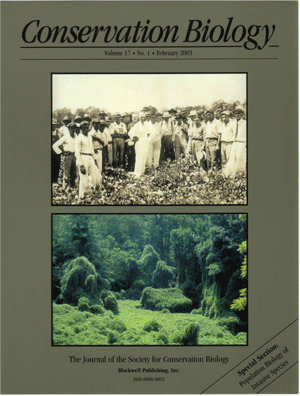

Conservation
Biology: Freshwater Ecology, Invasive Species, Risk Analysis,
and Environmental Policy
| David
M. Lodge
Professor
D. Phil. University of Oxford
Postdoctoral,
University of Wisconsin-Madison |
|
Many
global environmental changes have very large impacts on
biodiversity, on community structure, and on the function
of terrestrial and aquatic ecosystems. Current research
in my lab focuses on conservation biology, especially
on the overlapping spheres of interest described below,
all of which relate to current global changes.
My students, postdocs, and I have conducted field work
in the inland lakes and streams of northern Indiana/southern
Michigan, UNDERC in the upper peninsula of Michigan, the
Great Lakes, the coastal plain of North Carolina, Denmark,
and Kenya. Current funding comes from NSF, EPA,
NOAA Sea Grant, USDA, and the US Department of Education
Freshwater
Ecology
Our long-term interest in food webs and the impacts of
consumers on their resources continues. We focus
especially on predatory-prey and plant-herbivore interactions.
A major overall question motivating this area of
research is "how does the structure of communities impact
lake and stream ecosystem function?" Consumer species
that we have studied in detail include algivorous snails,
herbivorous waterfowl, predacious fishes, and omnivorous
crayfishes. Our experiments at the UND Environmental
Research Center ( UNDERC
) have recently changed the tradition in limnology
of separately studying the pelagic and benthic habitats
in lakes. We have demonstrated, for example, that
benthic algal production often compensates for phytoplankton
production; that macrophytes provide a predation refuge
to Daphnia ; and that when crayfish clearcut
the lake bottom, benthic productivity declines and lake-wide
energy flows shift. In general, our studies demonstrate
that consumer-resource interactions, especially between
benthic and pelagic habitats, powerfully influence freshwater
community structure and ecosystem function.
Most recently, we are examining the role and interactions
of climate, watershed vegetation, and the structure and
function of food webs in linked lake-stream systems.
Specifically, we are focusing on the controls of the quantity
and quality of dissolved organic carbon (DOC) in affecting
behavior and populations of freshwater algae and invertebrates.
Invasive
Species Biology and Bioeconomics
In recognition of the extreme importance of invasive species
in driving declines in native biodiversity and changes
in ecosystem function, invasion biology has emerged in
recent years as a central focus of conservation biology.
Because these same species threaten human health,
and cause enormous financial damage to crops, forests,
and industrial infrastructure, they are also of critical
importance in environmental economics. Together
with our economist collaborators, we are leading the way
in developing the capacity to forecast invasions and quantify
the interaction between invasions and the economic forces
that drive and respond to invasions. One overall
question is "can we forecast the introduction, establishment,
dispersal, and impact of nonindigenous species on native
species and ecosystems?" We are studying the pathways
by which alien species are being introduced; the interactions
that alien species have with native species, and how those
interactions affect community and ecosystem function.
We are also conducting extensive statistical analyses
of alien and native species in the Great Lakes to discover
characteristics that distinguish invasive from non-invasive
species, and species that become nuisances from those
that do not. In addition, we are using stochastic
population models to estimate the risk of establishment
of alien species from unintentional releases like those
that commonly occur in ships' ballast water.
We are combining ecological and economic models to provide
guidance to societal investments invasive species management-for
example, how much should be invested in prevention vs.
control. Our first papers on this topic demonstrate
that it would be cost-effective to invest much more heavily
in preventing future invasions rather than waiting and
responding once an invasion happens.
Ecological
Risk Analysis
Our work in invasion biology is one example of our work
on risk analysis (which combines risk assessment and risk
management). In a second area of ecological risk
analysis, we are collaborating with colleagues in chemical
engineering to quantify the ecological risk posed by ionic
liquids, a new class of ionic compounds that are liquid
at room temperature. As solvents, these compounds
are likely to be adopted by a number of industries in
the near future. They are attractive as "green
chemicals" because their adoption would certainly reduce
air pollution as they replace the organic solvents now
in use. However, the potential for water pollution
has not assessed, and the possibility therefore exists
of another MTBE-like episode-where one form of environmental
pollution is exchanged for another. In order to
prevent that, we are testing a number of alternative forms
of the ionic liquids for their ecotoxicity to single-
and multiple-species freshwater communities. The
ecological results in turn are guiding the research in
chemical engineering toward more environmentally benign
combinations of ions. This is a completely novel
and exciting area of interdisciplinary research.
Global
Changes and Biodiversity
Much of our research in freshwater ecology involves
global changes, but in the past our study of those issues
has been largely local and regional. More recently,
we have scaled up our quantification of these issues
to the global level, focusing on the impact on freshwater
biodiversity of climate change (as it affects surface
water availability), irrigation, land use, acidification,
and eutrophication. For example, on a global
scale, we are forecasting likely declines in fish species
number in watersheds that are predicted to become dryer
under one or more future scenarios of economic, political,
and social development.

Environmental
Ethics and Policy
Much of our on-going research has direct application
to natural resource management, policy, and environmental
ethics. Thus, in the last few years, we have
been conducting research at both very specific levels
of policy (how much should society invest in preventing
the further spread of zebra mussel?) and at the more
general levels of intersection of science, theology,
and environmental ethics. For example, we organized
a conference and subsequently produced a book ( Religion
and the New Ecology: Environmental Prudence in a World
in Flux, in review) that focused in part on the
question, "how should ethical prescriptions for natural
resource management change when theologians and ethicists
recognize that nature has always and will always be
changing, even apart from the rapid anthropogenic global
changes discussed above?" We were motivated by
the belief that it is critical that scientists and ethicists
better understand each other's ways of thinking and
keep current in each discipline, at least through interdisciplinary
conversation.
Selected
Publications:
Lodge, D.M. and Kristin Shrader-Frechette. 2003. Nonindigenous species: ecological explanation, environmental ethics, and public policy. Conservation Biology 17:31-37.
Drake, J.M. and D.M. Lodge. 2004. Global hotspots of biological invasions: evaluating options for ballast-water management. Proc. R Soc London B 271:575-580.
Sponberg, A.F. and D.M. Lodge. 2005. Seasonal belowground herbivory and a density refuge from waterfowl herbivory for Vallisneria americana. Ecology 86:2127-2134.
Sala, O., D. van Vuuren, H.M. Pereira, D.M. Lodge, J. Alder, G. Cumming, A. Dobson, V. Wolters, M. Xenopoulos, A.S. Zaitsev, M. Gonzalez Polo, I. Gomes, C. Queiroz, and J. Rusak. 2005. Biodiversity across scenarios, Ch. 10 (pp. 375-410) in S.R. Carpenter, P.L. Pingali, E.M. Bennett, and M.B. Zurek (eds), Ecosystems and human well-being: Scenarios, volume 2, Millennium Ecosystem Assessment.
Leung, B., D. Finnoff, J.F. Shogren, and D.M. Lodge. 2005. Managing invasive species: rules of thumb for rapid assessment. Ecological Economics 55:24-36.
Xenopoulos, M.A., D.M. Lodge, J. Alcamo, M. Marker, K. Schulze, and D. van Vuuren. 2005. Scenarios of freshwater fish extinctions from climate change and water withdrawal. Global Change Biology 11:1557-1564.
Lodge, D.M. S.K. Rosenthal, K.M. Mavuti, W. Muohi, P. Ochieng, S.S. Stevens, B.N. Mungai, and G.M. Mkoji. 2005. Louisiana crayfish (Procambarus clarkii) (Crustacea: Cambaridae) in Kenyan ponds: non-target effects of a potential biological control agent for schistosomiasis. African Journal of Aquatic Science 30:119-124.
Drake, J.M. and D.M. Lodge. 2006. Allee effects, propagule pressure and the probability of establishment: risk analysis for biological invasions. Biological Invasions 8:365-375.
Drake, J.M. and D.M. Lodge. 2006. Forecasting potential distributions of nonindigenous species with a genetic algorithm. Fisheries 31:9-16.
Rosenthal, S.K., S.S. Stevens, and D.M. Lodge. 2006. Whole-lake effects of invasive crayfish (Orconectes spp.) and the potential for restoration. Canadian Journal of Fisheries and Aquatic Science 63:1276-1285.
Dobson, A., D. Lodge, J. Alder, G. S. Cumming, J. Keymer, J. McGlade, H. Mooney, J.A. Rusak, O. Sala, V. Wolters, D. Wall, Rachel Winfree, and M.A.. Xenopoulos. 2006. Habitat loss, trophic collapse, and the decline of ecosystem services. Ecology 87:1915-1924.
Lodge, D.M., S. Williams, H. MacIsaac, K. Hayes, B. Leung, L. Loope, S. Reichard, R.N. Mack, P.B. Moyle, M. Smith, D.A. Andow, J.T. Carlton, and A. McMichael. 2006. Biological invasions: recommendations for policy and management [Position Paper for the Ecological Society of America]. Ecological Applications 16:2035-2054.
Lodge, D.M. and C. Hamlin (eds). 2006. Religion and the New Ecology: Environmental Responsibility in a World in Flux. University of Notre Dame Press. 325+ pp.
Keller RP, DM Lodge and DC Finnoff. 2006. Risk assessment for invasive species produces net bioeconomic benefits. Proceedings of the National Academy of Sciences (in press)
Drake, J.M. and D.M. Lodge. Rates of species introductions in the Great Lakes via ships’ ballast water and sediments. Canadian Journal of Fisheries and Aquatic Sciences (in press)
Additional information, including instructions for prospective
graduate students, is available on the Lodge
Lab web site.